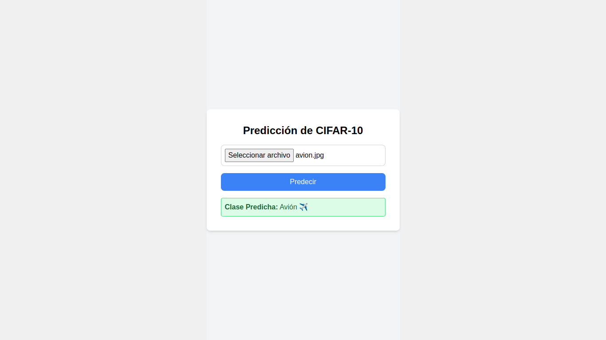

Configuración del Frontend con Vite + React + Tailwind CSS

Paso 1: Crear el Proyecto de Vite
Crea un nuevo proyecto de Vite utilizando React:
npm create vite@latest my-cifar10-app -- --template react
cd my-cifar10-appPaso 2: Instalar Depedencias de Axios y Tailwind CSS
Dentro del directorio del proyecto, instala Axios y Tailwind CSS:
npm install axios
npm install -D tailwindcss postcss autoprefixerPaso 3: Crear Archivos de Configuración de Tailwind CSS
Ejecuta el siguiente comando para inicializar Tailwind CSS:
npx tailwindcss init -pLuego, actualiza tailwind.config.js para incluir las rutas de tus archivos:
Copiar código
/** @type {import('tailwindcss').Config} */
module.exports = {
content: [
"./index.html",
"./src/**/*.{js,ts,jsx,tsx}",
],
theme: {
extend: {},
},
plugins: [],
}Paso 4: Agregar Tailwind a tu CSS
Abre el archivo src/index.css y agrega las directivas de Tailwind:
@tailwind base;
@tailwind components;
@tailwind utilities;
## Paso 5: Crear el Componente Principal
Reemplaza el contenido de src/App.jsx con el siguiente código para crear una interfaz mejorada:
```javascript
import { useState } from "react";
import axios from "axios";
function App() {
const [file, setFile] = useState(null);
const [prediction, setPrediction] = useState("");
const [error, setError] = useState("");
const handleFileChange = (event) => {
setFile(event.target.files[0]);
};
const handleSubmit = async (event) => {
event.preventDefault();
if (!file) {
setError("Por favor, sube una imagen.");
return;
}
setError("");
const formData = new FormData();
formData.append("file", file);
try {
const response = await axios.post("http://localhost:8000/predict/", formData, {
headers: {
"Content-Type": "multipart/form-data",
},
});
setPrediction(response.data.predicted_class);
} catch (error) {
setError("Ocurrió un error al realizar la predicción.");
}
};
return (
<div className="min-h-screen flex items-center justify-center bg-gray-100">
<div className="bg-white p-8 rounded-lg shadow-md max-w-lg w-full">
<h1 className="text-2xl font-bold mb-4 text-center">Predicción de CIFAR-10</h1>
<form onSubmit={handleSubmit} className="flex flex-col">
<input
type="file"
accept="image/*"
onChange={handleFileChange}
className="mb-4 border border-gray-300 rounded-lg p-2"
/>
<button
type="submit"
className="bg-blue-500 text-white p-2 rounded-lg hover:bg-blue-600 transition"
>
Predecir
</button>
</form>
{prediction && (
<div className="mt-4 p-2 bg-green-100 text-green-800 border border-green-400 rounded">
<strong>Clase Predicha:</strong> {prediction}
</div>
)}
{error && (
<div className="mt-4 p-2 bg-red-100 text-red-800 border border-red-400 rounded">
<strong>Error:</strong> {error}
</div>
)}
</div>
</div>
);
}
export default App;Parte 3: Ejecutar el Proyecto Frontend
Para ejecutar el proyecto de frontend, utiliza el siguiente comando:
npm run devEl frontend estará disponible en http://localhost:5173.
Resultados
Ahora deberías tener una aplicación completamente funcional que permite a los usuarios cargar una imagen, realizar una predicción utilizando el modelo CIFAR-10 y mostrar la clase predicha con emojis. La interfaz se ve más atractiva gracias a Tailwind CSS.
Conclusión
Este tutorial cubre cómo configurar un backend con FastAPI para manejar la predicción de imágenes utilizando TensorFlow y un frontend con Vite + React y Tailwind CSS. Si deseas personalizar aún más la aplicación o agregar nuevas características, ¡no dudes en preguntar!